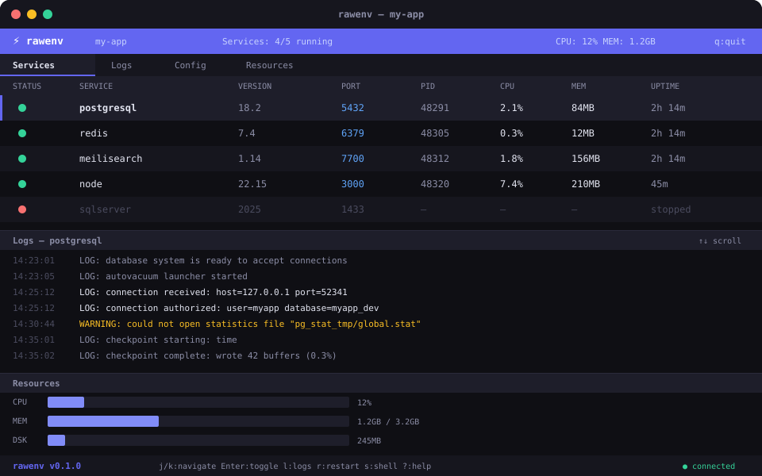

Auto-detect your stack. Install services natively. Isolate with OS sandboxing.
No Docker. No containers. Just raw speed.
curl -fsSL rawenv.sh/install | sh
Scans project files — package.json, Gemfile, go.mod — and resolves runtimes and services. Discover all projects on your machine.
Install any runtime with rawenv add node@22. SHA256-verified downloads, extracted to a local store. No system pollution.
rawenv up activates all runtimes. rawenv shell drops you into an isolated shell with the right PATH. Sub-second startup.
OS-native sandboxing — macOS Seatbelt, Linux namespaces + Landlock, Windows Job Objects. Per-project isolation without VMs.
Local DNS entries, Caddy reverse proxy generation, SSH tunneling, and service dependency mapping — all built in.
Built-in AI that reads your project context and answers questions. Cascading provider fallback: local → API → cloud.
Full terminal dashboard and native GUI window. Manage services, view logs, monitor resources, and chat with AI — visually.
Generate Terraform configs, Ansible playbooks, and Containerfiles from your rawenv.toml. Dev to production in one command.

| Command | Description |
|---|---|
init | Detect project and generate rawenv.toml |
add <pkg>@<ver> | Install a package (e.g. rawenv add node@22) |
up | Activate all configured runtimes |
services ls | List configured runtimes/services with status |
shell | Enter rawenv shell with modified PATH |
dns | Generate /etc/hosts entries for project |
proxy | Generate Caddy reverse proxy config |
tunnel <port> | Generate SSH tunnel command for a local port |
connections | Show service dependency map |
cell info | Show available isolation backends |
discover | Scan for projects on this machine |
tui | Launch TUI dashboard |
gui | Launch GUI window |
ai "question" | Ask AI assistant (one-shot) |
deploy generate | Generate Terraform, Ansible, and Containerfile |
deploy apply | Run deployment |
| rawenv | Docker | devbox | Herd | |
|---|---|---|---|---|
| Memory overhead | ~0 MB | ~300 MB | ~50 MB | ~80 MB |
| Startup time | <1s | 5-15s | 2-5s | 3-8s |
| Isolation | OS-native | Containers | Nix store | None |
| Auto-detect | ✓ | ✗ | Partial | PHP only |
| AI assistant | ✓ | ✗ | ✗ | ✗ |
| Deploy to prod | ✓ | ✓ | ✗ | ✗ |
| Tunneling | Built-in | ✗ | ✗ | ✗ |
| GUI + TUI | Both | Desktop app | CLI only | GUI only |